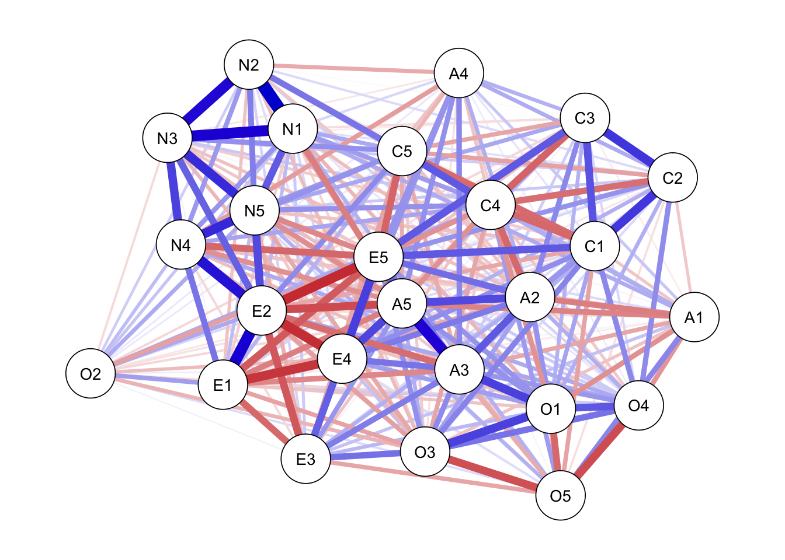
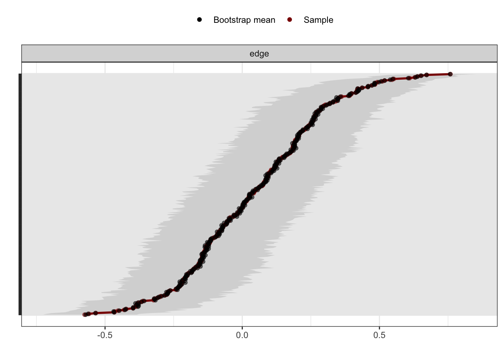
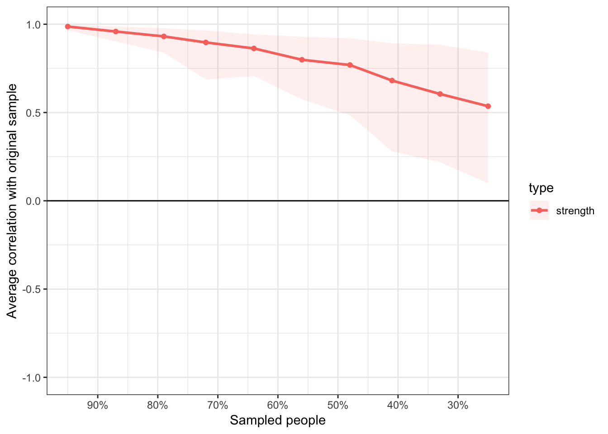
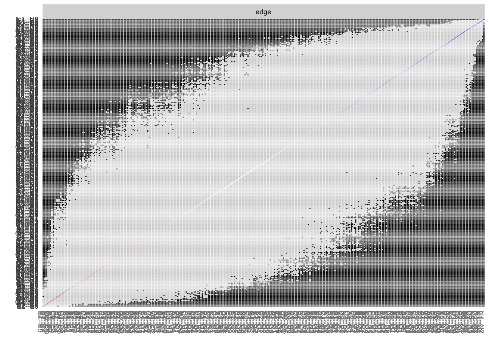
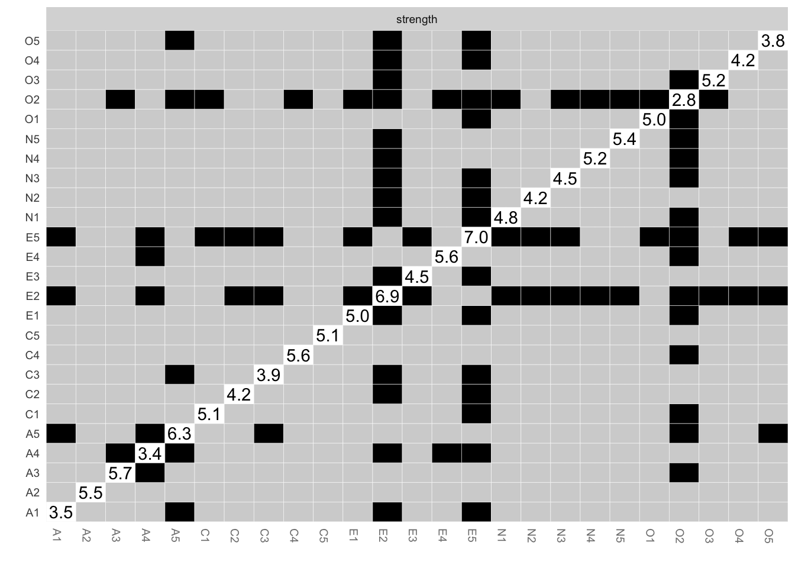

Network analysis tutorial
Jiaxin Deng
2019/5/20
Brief introduction to network analysis
A network is a set of nodes connected by a set of edges.
Several packages are used in the network analysis, including network, statnet, igraph and qgraph.
qgraph was developed in the context of psychometrics approach by Dr. Sacha Epskamp and colleagues in 2012. For more details, please click this following link for the paper published in Journal of Statistical Softare:
https://www.jstatsoft.org/article/view/v048i04
This package can create graphs to visualize the statistics in different layout modes based on different correlation matrices, such as polychoric correlation, partial correlation.
Example code
Estimating networks
Here is the following steps to conduct a network analysis using qgraph.
Take big5 data as an example. This is a dataset of the Big five personality traits assessed on 500 psychology students.
Firstly, qgraph package should be activated using library()
library(qgraph)And then, data need to be imported in the current R project.
data(big5)To creat the graph is basically to use qgraph(), such as:
qgraph<-qgraph(cor(big5))
But it should be noted that the input in the qgraph() can be a weight matrix or an edgelist.
Thus, if you want to creat the association network, cor()/cor_auto() can be used to creat the matrix first.
Also, you can use groups to indicate which nodes belong together, such as:
data("big5groups")
qgraph(cor(big5), groups=big5groups)
Besides, you can use some additional arguments to customize your representing graph.
you can use layout to change the representation, such as:
qgraph(cor(big5), groups=big5groups,layout= "spring")
qgraph(cor(big5), groups=big5groups,layout= "circle")
Moreover, you can use palette and theme to change the colour of nodes.
Notes: the palette used for colouring nodes when using groups argument.
For example:
qgraph(cor(big5), groups=big5groups,palette="colorblind")
More specifially, there are several optional graphical arguments to change the graph representation, such as minizum (to omit correlations not interested in), borders(to omit borders around the nodes), vsize(change the size of nodes) and legend(to control the legend placed on the right side).
For example:
qgraph(cor(big5), groups=big5groups,layout="spring",minimum=0.35,vsize=3,legend=TRUE,borders=FALSE)
In addition, there are some options for correlation or covariance matrices to make the graph. You can use graph to change the type of graph.
For example, if you want to plot a partial correlation network, you can use graph="pcor to make it.
qgraph(cor(big5), groups=big5groups,layout="spring",minimum=0.35,vsize=3,legend=TRUE,borders=FALSE,graph="pcor")
Finally, if you decide the representation of the graph, you can choose to use filetype(pdf/jpg/tex etc.) to save your graph.
After estimating the graph, you can calculate the centrality indices using centrality_auto to quantify the structural importance of each node in the network.
Then, you will get this figure.
## Note: z-scores are shown on x-axis rather than raw centrality indices.
Estimating the accuracy of networks
Like many psychometrics analysis, the accuracy of psychological network is also limited to sample size. The limited sample size might restrict the accuracy of the parameters and the interpretation of the network. Thus, it’s necessary and crucial to assess the accuracy of the network parameters and measures.
In order to estimate the accuracy of the networks estimation, three steps to evaluate the stability of the network routinely were conducted using bootnet package (Epskamp, Borsboom & Fried, 2018) https://doi.org/10.3758/s13428-017-0862-1
In addition to use qgraph to create the graph, you can also use estimateNetwork to estimate the network structure as well.
To get the data:
library(psych)
data("bfi")
bfisub<-bfi[1:100,1:25]library(bootnet)## Loading required package: ggplot2##
## Attaching package: 'ggplot2'## The following objects are masked from 'package:psych':
##
## %+%, alpha## This is bootnet 1.2## For questions and issues, please see github.com/SachaEpskamp/bootnet.Network <- estimateNetwork(bfisub, default = "cor")## Estimating Network. Using package::function:
## - qgraph::cor_auto for correlation computation
## - using lavaan::lavCor
## - psych::corr.p for significance thresholding## Variables detected as ordinal: A1; A2; A3; A4; A5; C1; C2; C3; C4; C5; E1; E2; E3; E4; E5; N1; N2; N3; N4; N5; O1; O2; O3; O4; O5plot(Network, layout = 'spring')
Here is three steps to conduct the accuracy estimation.
Firstly, the accuracy of edge-weights can be estimated by drawing bootstrapped CIs.
Results1 <- bootnet(Network, nBoots = 1000, nCores = 8)## Note: bootnet will store only the following statistics: edge, strength, outStrength, inStrength## Estimating sample network...## Estimating Network. Using package::function:
## - qgraph::cor_auto for correlation computation
## - using lavaan::lavCor
## - psych::corr.p for significance thresholding## Variables detected as ordinal: A1; A2; A3; A4; A5; C1; C2; C3; C4; C5; E1; E2; E3; E4; E5; N1; N2; N3; N4; N5; O1; O2; O3; O4; O5## Bootstrapping...## Computing statistics...plot(Results1, labels = FALSE, order = "sample")
Secondly, the stability of centrality indices can be investigated after observation only portions of the data.
Results2 <- bootnet(Network, nBoots = 1000, nCores = 8, type = "case")## Note: bootnet will store only the following statistics: edge, strength, outStrength, inStrength## Estimating sample network...## Estimating Network. Using package::function:
## - qgraph::cor_auto for correlation computation
## - using lavaan::lavCor
## - psych::corr.p for significance thresholding## Variables detected as ordinal: A1; A2; A3; A4; A5; C1; C2; C3; C4; C5; E1; E2; E3; E4; E5; N1; N2; N3; N4; N5; O1; O2; O3; O4; O5## Bootstrapping...## Computing statistics...plot(Results2)
Lastly, the bootstrapped differences between edge-weights and centrality indices to test whether these differ significantly from each other can be carried out.
plot(Results1, "edge", plot = "difference",onlyNonZero = TRUE, order = "sample")## Expected significance level given number of bootstrap samples is approximately: 0.05
plot(Results1, "strength", plot = "difference")## Expected significance level given number of bootstrap samples is approximately: 0.05